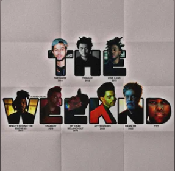

About
The Weeknd, whose real name is Abel Tesfaye, is a Canadian singer, songwriter, and record producer. He is known for his dark, atmospheric music that blends R&B, pop, and hip-hop. The Weeknd first gained recognition in 2010 with his mixtape House of Balloons, which was followed by two more mixtapes, Thursday and Echoes of Silence. In 2012, he released his debut studio album, Trilogy, which compiled the three mixtapes. The Weeknd's second studio album, Beauty Behind the Madness, was released in 2015 and featured the hit singles "Can't Feel My Face" and "The Hills." The album won a Grammy Award for Best Urban Contemporary Album. The Weeknd's third studio album, Starboy, was released in 2016 and featured the title track, which won a Grammy Award for Best Urban Contemporary Album. The Weeknd's fourth studio album, After Hours, was released in 2020 and featured the hit singles "Blinding Lights" and "Save Your Tears." The album was nominated for Album of the Year at the Grammy Awards.
Discography
- House of Balloons (2011)
- Thursday (2011)
- Echoes of Silence (2011)
- Trilogy (2012)
- Kiss Land (2013)
- Beauty Behind the Madness (2015)
- Starboy (2016)
- My Dear Melancholy (2018)
- After Hours (2020)
- Hurry Up Tomorrow (2025)
Songs Over 1B+
The only artist with 27 songs with over 1 Billion streams each on Spotify.
Songs Over 1 Billion List
- Blinding Lights (4.6B)
- Starboy (3.6B)
- Die For You (2.6B)
- The Hills (2.5B)
- Save Your Tears (2.2B)
- Call Out My Name (1.9B)
- I Feel It Coming (1.8B)
- Can't Feel My Face (1.8B)
- Earned It (1.8B)
- Save Your Tears (Remix) (1.7B)
- Creepin' (1.5B)
- One Of The Girls (1.5B)
- Stargirl Interlude (1.2B)
- Reminder (1.1B)
- I Was Never There (1.1B)
- Often (1B)
- Heartless (1B)
- After Hours (1B)
- Or Nah (1B)
- Die For You (Remix) (1B)
- Love Me Harder (1B)
- Lost In The Fire (1B)
- Moth To A Flame (1B)
- Popular (1B)
- Pray For Me (1B)
- Low Life (1B)
- In Your Eyes (1B)
Top 10 Most Streamed Songs
Album Links

Trilogy
Tracklist of Trilogy
The Trilogy is divided in 3 chapters.

Kiss Land
Tracklist of Kiss Land

Beauty Behind
The Madness
Tracklist of Beauty Behind The Madness

Starboy
Tracklist of Starboy
My Dear
Melancholy
Tracklist of My Dear Melancholy

After Hours
Tracklist of After Hours

Dawn FM
Tracklist of Dawn FM
Hurry Up
Tomorrow
Tracklist of Hurry Up Tomorrow
- Wake Me Up
- Cry For Me
- I Can't Fucking Sing
- São Paulo
- Until We're Skin & Bones
- Baptized In Fear
- Open Hearts
- Opening Night
- Reflections Laughing
- Enjoy The Show
- Given Up On Me
- I Can't Wait To Get There
- Timeless
- Niagara Falls
- Take Me Back To LA
- Big Sleep
- Give Me Mercy
- Drive
- The Abyss
- Red Terror
- Without a Warning
- Hurry Up Tomorrow
My playlist here! Go and check it out.
Soul Food 💓
Major Awards
- 4 Grammy Awards
- 20 Billboard Music Awards
- 20 Juno Awards
- 2 American Music Awards
- 1 Academy Award (Best Original Song - "Earned It")
- 1 Primetime Emmy Award
- 1 Latin Grammy Award
Notable Records
- "Blinding Lights" is the #1 Billboard Hot 100 song of all time
- First artist to simultaneously hold top 3 spots on Billboard Hot R&B Songs chart
- Most monthly listeners in Spotify history (over 100 million)
- Most streamed artist on Spotify (2023)
- First artist to reach 100 million monthly listeners on Spotify
- Most weeks spent in Billboard Hot 100 Top 10 ("Blinding Lights" - 57 weeks)
Notable Collaborations
- Daft Punk - "Starboy", "I Feel It Coming"
- Ariana Grande - "Love Me Harder", "Die For You (Remix)"
- Drake - "Crew Love", "Live For"
- Kendrick Lamar - "Pray For Me", "Sidewalks"
- SZA - "Die For You"
- Post Malone - "One Right Now"
- Swedish House Mafia - "Moth To A Flame"
- Calvin Harris - "Over Now"
- Future - "Low Life", "Comin Out Strong"
- Travis Scott - "Wake Up"
Instagram X.com Facebook YouTubeSocial Media